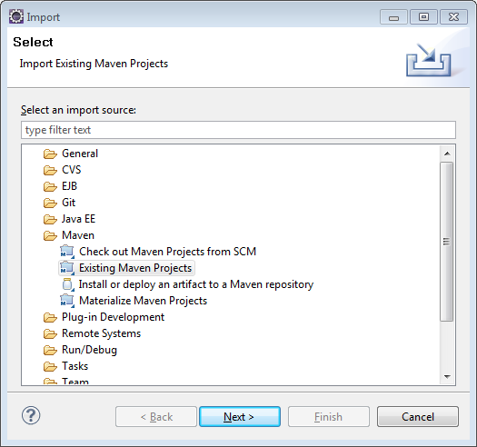
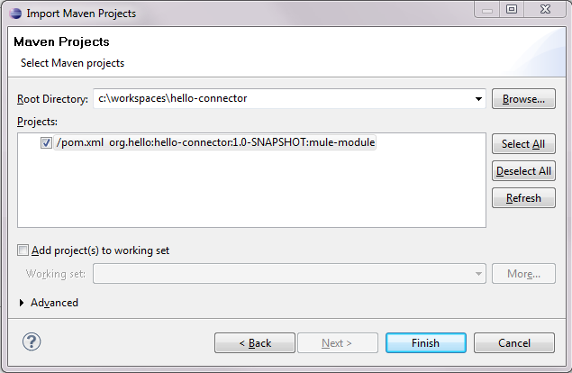
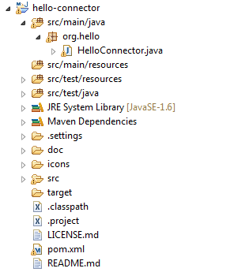
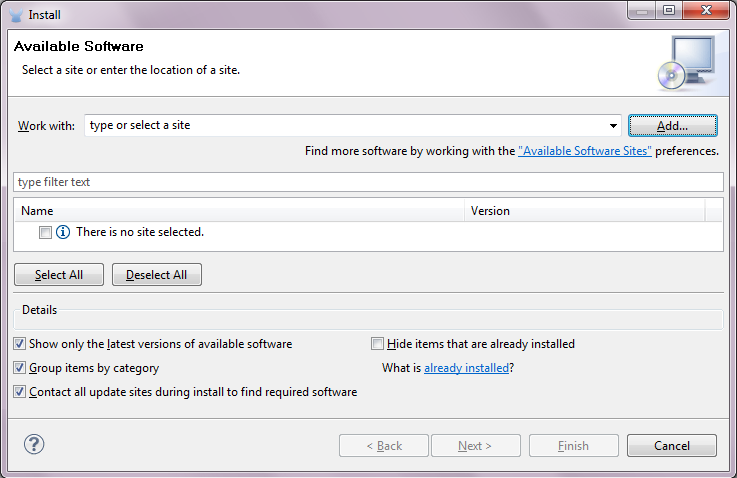
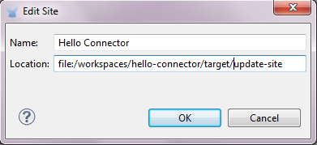
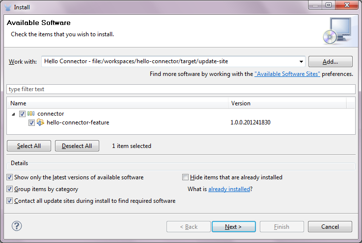

Your First Cloud Connector
This tutorial will help you get started building Mule Cloud Connectors and Modules with Mule DevKit. The sections below demonstrate how to build a simple cloud connector and integrate it into your Mule ESB application.
This document will help you:
-
learn basic DevKit concepts
-
create a basic cloud connector with a Hello World operation
-
import your new cloud connector into Mule Studio
-
use the new connector in your Mule ESB application
Creating a Cloud Connector
The first step in this tutorial involves creating a Cloud Connector. Mule DevKit makes it easy to get started by generating a connector for you.
Prerequisites
To complete this tutorial, you must be proficient in Java programming and understand how to use the command line, Maven and Eclipse or IntelliJ.
Ensure that you are using Maven 3 and JDK 6. (Current releases of DevKit do not support JDK 7.).
Creating Your Connector
Complete the following steps to initiate generation of your first connector.
-
Type the following command in your Windows Command Prompt or Unix shell:
$ mvn archetype:generate -DarchetypeGroupId=org.mule.tools.devkit \ -DarchetypeArtifactId=mule-devkit-archetype-cloud-connector \ -DarchetypeVersion=3.3.1 -DgroupId=org.hello -DartifactId=hello-connector -Dversion=1.0-SNAPSHOT \ -DmuleVersion=3.3.0 -DmuleConnectorName=Hello -Dpackage=org.hello \ -DarchetypeRepository=http://repository.mulesoft.org/releases
-
The command inherits the following parameters which you can change depending on your particular connector:
Name Description muleConnectorName
name of your connector
package
Java package for your connector classes
artifactId
Maven artifactId of the connector
groupId
Maven groupId of the connector
-
DevKit prompts you to ensure that the parameters listed above are correct. Type Y, then press enter to confirm.
-
DevKit generates a project for your connector in the
hello-connector directory
Importing the Connector into Your IDE
After creating your project on the command line, you must import it into your integrated development environment (IDE). The following outlines the import procedure using Eclipse; if you use IntelliJ, consult Writing Extensions in IntelliJ.
Prerequisites
Because DevKit generates your new cloud connector as a Maven project, you must have Maven tooling for Eclipse installed. Follow the m2eclipse installation guide to install Maven tooling.
Importing your project
-
If you haven’t already done so, start Eclipse, then set up a workspace for your cloud connector. Be sure your workspace does not contain a space in the directory path.
-
In the workbench view, select File > Import …
-
In the dialogue box, select Existing Maven Projects from the Maven section.
 -
In the new dialogue box, navigate to, then select, your new cloud connector project.
 -
Click Finish to import the project into your workspace.
-
The Eclipse-Maven integration imports the project and downloads all the required libraries; this may take several minutes. See image below for an example of an imported project.

Updating your project
The Maven build automatically generates the Mule schema and namespace handler for your cloud connector. Maven tooling for Eclipse, however, does not perform the full build every time you save the project. As a consequence, you must manually update your project every time you add or remove methods to your cloud connector class.
Right-click the cloud connector project. Then, from the Maven submenu, select Update Project Configuration (see image below).
+ image::updateprojectconfiguration-1.png[UpdateProjectConfiguration-1]
Your First Connector Operation
An operation is simply a DevKit method call with annotations. Connector operations wrap connectivity to external systems, or wrap some logic into a simple call that your Mule ESB application can make. The following sample code executes a simple operation which simply changes the payload to Hello Joe.
/**
* Says hello to someone.
*
* {@sample.xml ../../../doc/Hello-connector.xml.sample hello:say-hello}
*
* @param name The name to say hello to.
* @return The hello message.
*/
@Processor
public String sayHello(String name)
{
return "Hello " + name;
}The @Processor annotation dictates that this method becomes a message processor in a Mule ESB flow. DevKit turns the "String name" into an attribute that can be specified as a parameter to the message processor (see code below).
<hello:say-hello name="Joe"/>Mule DevKit also enables you to substitute expressions into the parameters to your operation, so you can extract data from the payload (see code below).
<hello:say-hello name="#[groovy:payload.name]"/>Documenting your Connector
You are required to document each operation your connector performs. This ensures that your end users understand how to use your connector correctly. You must also include a sample XML snippet in the documentation that DevKit generates for your connector. To do this, open the hello-connector/doc/Hello-connector.xml.sample, then add the following code.
<!-- BEGIN_INCLUDE(hello:say-hello) -->
<hello:say-hello name="Joe" />
<!-- END_INCLUDE(hello:say-hello) -->
To disable the documentation, add -Ddevkit.javadoc.check.skip to the command line whenever you run Maven.
|
Building Your Connector
To build the connector, go to the command line, then run the following command:
$ cd hello-connector$ mvn package -Ddevkit.studio.package.skip=false
DevKit’s Maven plugin builds several artifacts in the target directory (see table below).
hello-connector-1.0-SNAPSHOT.jar |
connector JAR |
hello-connector-1.0-SNAPSHOT.zip |
Mule plugin which you can drop into the |
apidocs |
auto-generated installation instructions, javadoc, and Mule API docs for your connector |
Using Your Cloud Connector
Complete the following procedure to import your connector into Mule Studio.
-
In Mule Studio, access the Help menu, then select Install Software.
 -
Click the Add button to add an update site.
-
In the Name field, enter the name,
Hello Connector. -
Enter the full path to your connector, prepended with
file:/", then click OK. -
Select your connector from the update site.
 -
Follow the steps to accept the license, then restart Studio.
-
Studio makes your new cloud connector available for selection in the Studio palette.